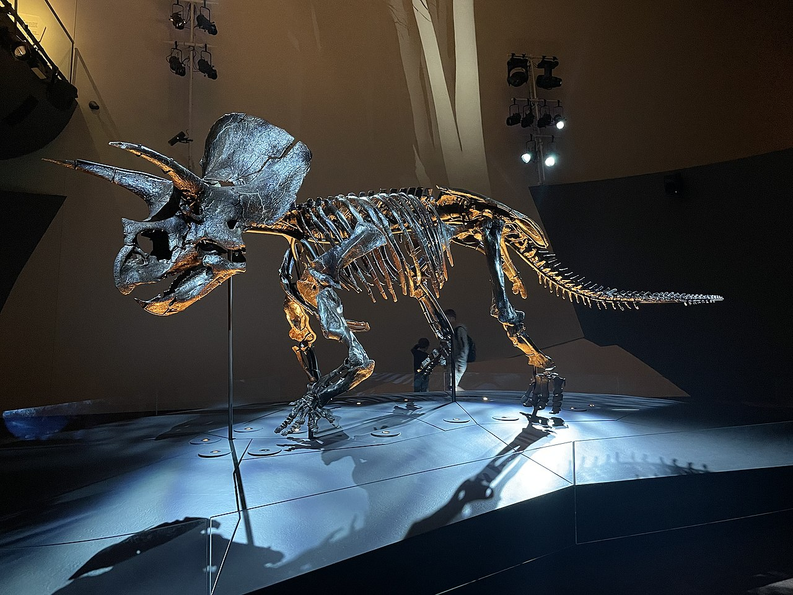
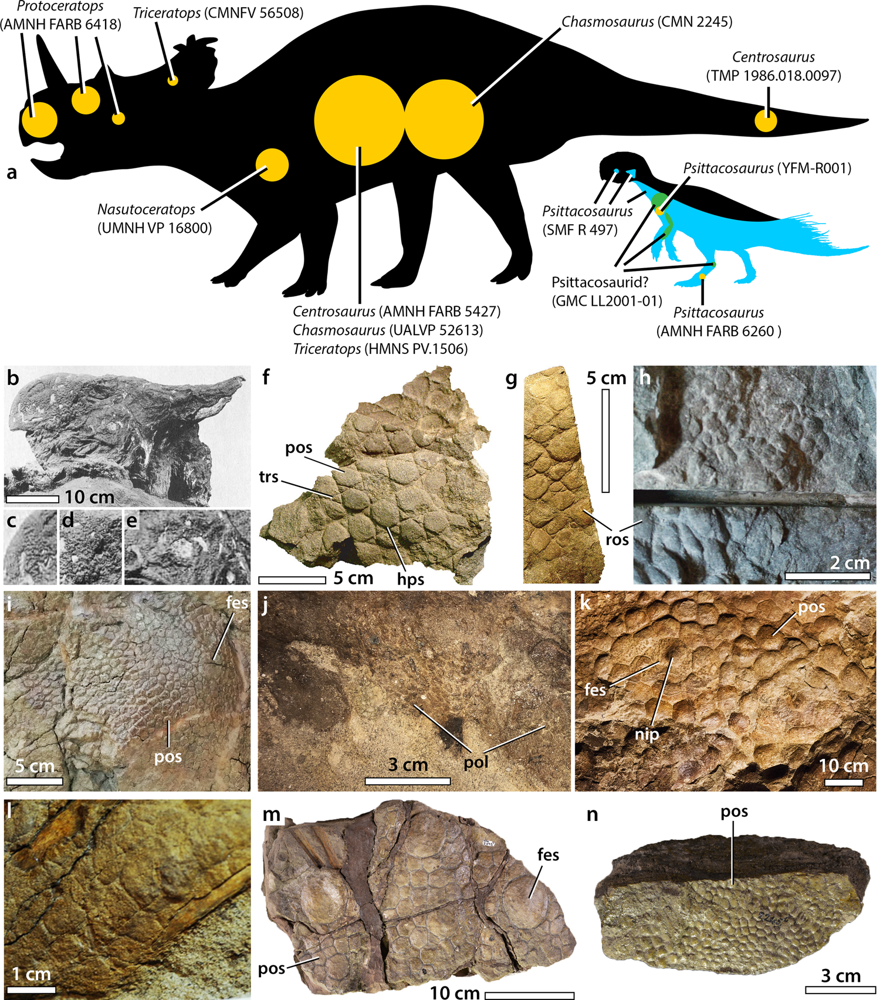
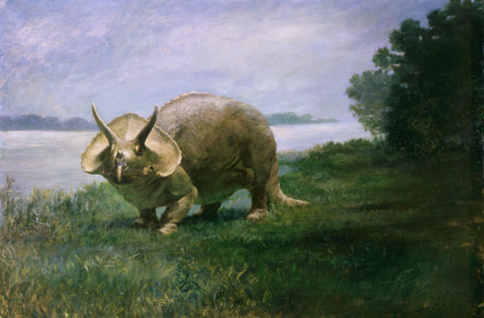

The triceratops is a 4 legged dinosaur from the late Cretaceous Period about 65-100 million years ago. It was a herbivore and had a large frill and 3 horns on its face and thick scales on its skin. It was a very large dinosaur and was one of the last dinosaurs to go extinct.
The neck of a Triceratops had a ball and socket joint that allowed it to move its head up and down and side to side. This was useful for moving around and for defense against predators. Your shoulder is a ball and socket joint, imagine if your neck was as strong as your shoulder. Also on its head were 3 horns, 2 above its eyes and 1 on its nose. The horns were made of very hard bone and were used for defense against predators and for fighting other Triceratops.
Triceratops pictures
  Triceratops facts
- Height: 10feet tall
- Length: 26-30-feet long
- Weight: 6-10 tons
- Discovered: 1887 in Denver Colorado
Want to learn more?
Check out the Triceratops Wikipedia page if your curious.